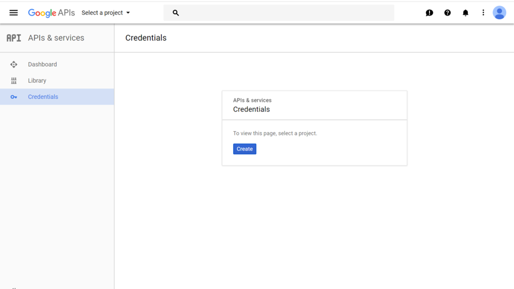
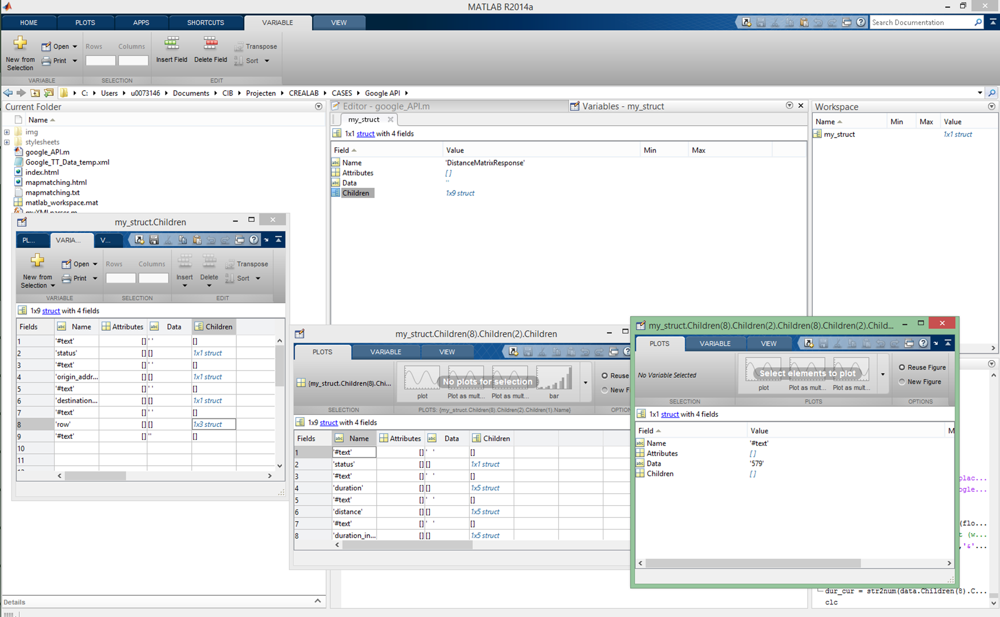

Google provides API's to develope applications using its mapping services. There are many different web services that can be used to extract data about the transportation system. The most important ones for traffic analysis are:
- Travel characteristics between different locations: (distance-matrix API)
- Generate routes for a mode of transport: (directions API)
- Snap GPS coordinates to roads and determine the speed limit: (roads API)
- Get information about a location: (places API)
As an example 3 different travel time estimataros are evaluated between two points using the distance-matrix API. In order to use the API a key must be optained from the developers console. Login with your google account, go to the Crendentials page and create a new project.
Next create a simple API key by clicking on create credentials. Each key kan be restricted to be used only by a specific IP address, app or website. The key is used to access google's API's by passing it as a parameter:
key=your_API_keyNext select have look at google maps and find out the coordinates of the starting point and the end point of a stretch of road. In the graph below two locations allong the E40 towards Brussels are choosen.
The coordinates and key are required to setup the API. A google API is typically composed of different parameters. In case of the distancematrix service the following are required:
- the service:
https://maps.googleapis.com/maps/api/distancematrix/xml? - the origins:
origins=50.865052, 4.586750 - the destinations:
destinations=50.869441, 4.477127 - your API key:
key=your_API_key
Note that the format of the result is explicitly provided in the API string. In this case the result is provided by the xml protocol.
The different parameters are combined into one long url. The API kan be tested by pasting the url into your browser:
https://maps.googleapis.com/maps/api/distancematrix/xml?origins=50.865052,%204.586750&destinations=50.869441,%204.477127&key=your_API_keyThe developers page provides extra information on different addtional parameters.
Two additional parameters are required to generate an estimate of the travel time at a specific time:
- the departure time (not in the past):
departure_time=1506617590 [UNIX time] - a travel time estimator:
traffic_model=best_guess [default] / optimistic / pessimistic
Mining data with Matlab
The xml file produced by the API is loaded into Matlab to automate the task of collecting data and setting up different API's. It is easy to writing the output of an url to a file is with the command urlwrite or websave.
>> urlwrite(txt_api,save_as_filename)>> websave(save_as_filename,txt_api)Loading the data fields of the xml file into the Matlab memory is more combersome. The xmlread function will return a Document Object Model (DOM) node that respresents the document. The node can be manipulated using standard DOM functions.
The mathworks web page provides an example of how to write a parser using the DOM functions. There is example code that produces a structure array with fields: Name, Attributes, Data, Children. Copy this code to a new m-file and save it as parseXML.m
Use this code to generate a structure array that contains all the xml data:
>> my_struct = parseXML(saved_xml_filename)Explore the data in the variable window
The data is buried deep within the structure but it is possible to write custom m-files to facilitate the xml processing.
Don't forget, the travel time at the specified departure time needs to be transformed into a numeric value:
>> travel_time_value = str2num(data.Children(8).Children(2).Children(8).Children(2).Children.Data)Additional reading and data sources
- Using databases
- Enhanced data processing
- Creating an interactive dashboard with RStudio and ShinyApp